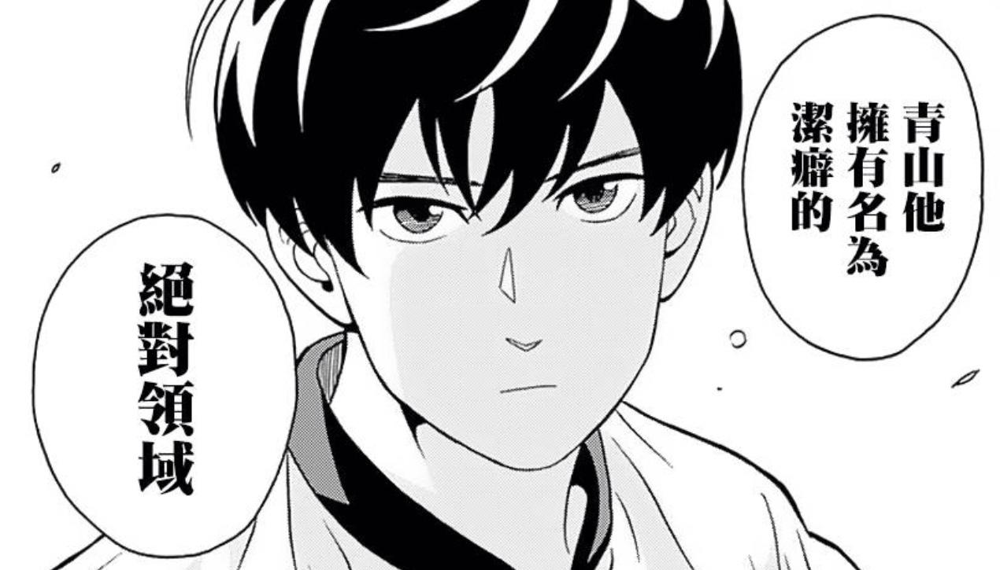

Hello World
CodeTengu Weekly 碼天狗週刊
CodeTengu Weekly 會在 GMT+8 時區的每個禮拜一早上 10:00 出刊，每一期會從目前的 curator 名單中選出三位來負責當期的內容，每一位 curator 各自負責不同的領域，如果你在這一期沒有看到自已感興趣的東西，說不定下一期就會有了。
你也可以瀏覽一下前幾期的內容，有價值的東西是不會過時的。
以下是目前的 curator 陣容：
- @vinta - I failed the Turing Test - 楊威利腦殘粉
- @saiday - Imnotyourson - 捷運飲食推廣委員會
- @tzangms - Oceanic / 人生海海 - 衝動型購物
- @fukuball - ImFukuball - 機器學習好難
- @wancw
- @adamp33 - 看棒球才是正職，副業是前端工程師
- @mingderwang
- @kako0507 - 熱愛嘗試新事物的前端工程師
- @chiahsien - Nelson
大家也可以 follow 一下 CodeTengu 的 Facebook、Twitter 或 GitHub，有很多 Weekly 看不到的內容。有任何建議或疑問也可以來 Gitter 聊一聊，歡迎亂入 👺
 @tzangms
@tzangms
Orator - An ActiveRecord ORM for Python
最近出現的 ORM, 看起來挺好用的, 其實一直都有在尋找 Python 有沒有這類獨立的 ORM, 平常都用 Django 的 ORM, 綁著 Django 不好抽出來, 可是也不太喜歡 SQLAlchemy :p
特別是最近流行 Serverless, 像是 AWS Lambda, 就很需要一個好用 ORM 來開發一些小東西。 看了 Orator 的設定文件, 簡單明暸, 覺得就是它了!
Announcing Zappa - Serverless Python Web Applications
因為 AWS Lambda 開始支援 Python 之後, 就開始看到一些 AWS Lambda 相關的 Python 專案出現了, 直接支援 Django 的就是 Zappa 了, 可以直接透過 ./manage.py 來直接上傳、更新 AWS Lambda 的程式, 很容易就可以把 Django 變成 Serverless。
雖然說我目前還是覺得在 Lambda 上面跑 Django 似乎 cost 有點高, 不過整個 zappa 把整個 API Gateway 跟 Lambda 的概念都包好了, 我覺得可以參考一下。
文章中的 影片 說明得滿清楚的, 不過比較好笑的是影片的第一個留言:
This is ridiculous. How is this even possible? I mean, I'm lost for words. How do you live with an unregistered copy of Sublime Text?
不得不說, 老兄, 這樣真的不行啊 LOL
Three Common Mistakes of the First Time Tech Lead
三個新手 Tech Lead 最常犯的錯誤。
- Coding Full-Time
- Making all the Technical Decisions
- Forgetting about Cultivating Team Culture
我得承認我都犯過, 不過這幾年學習下來, 我想應該都有修正了吧 :p
不過其實因為手上專案太多, 自己太容易變成瓶頸, 為了避免變成瓶頸, 其實就得朝這方向發展, 這幾年我也是讀了很多這方面的書跟文章。不過這篇確實寫得不錯, 除了收藏之外也跟大家分享一下。
@mingderwang
How to build stable systems.
如何做好 CI, 這是初學 DevOps 的人最常問的問題。但我始終認為, CI 要從程式架構的設計與專案的準備就開始, 而且整個團隊要有建構一個穩定系統的完整概念才行。然而建構一個穩定系統, 又談何容易, Jesper L. Andersen, How to build stable systems 這篇文章, 已略述一二。這裡我只要強調一個重點, "If you only ever run on windows, you are screwed." (是這篇文章說的, 不是我說的)
Finding The Most Lucrative Technology Jobs In 2016
每天忙碌地 coding, 有沒有發現你的一行 code 在美國值多少錢? 看到 2016 年美國最有價值的 IT 工作, 我忍不住想介紹這分析給正在埋頭寫 code 的人看。參考這些數據, 讓你決定用哪一種語言, 寫哪一行業的應用, 選擇哪個工作角色對你未來的工作生涯最有利。我覺得, 現在在軟體業的年輕人, 明明就相當於以前台灣所謂的"科技新貴", 為何沒有相對的待遇, 令人百思不解。
How to setup Docker Monitoring
當你越用越多 docker containers 時, 監控 docker 變成必要的工作之一。除了用 New Relic 公司所提供的 360度 docker visibility 以外, 你也可以利用 Google 的 cAdvisor, 配合 InfluxDB 資料庫引擎, 與 Grafana 的 Metrics Dashboard 自己架設 docker 監控環境。如果你已經裝 docker, 依照本篇文章的步驟, 就能快速架設完成。
 @wancw
@wancw
The Reference Data Pattern: Extensible and Flexible
一項關聯在資料庫裡通常直接用一個 table 表示，但是這樣 table 數量就會隨著資料模型複雜而變多。通常這些關聯屬性也會出現在標題、下拉選單、或其他 UI 元件上，手動維護 table 與程式碼間的對應也非常沒有效率又容易出錯。這篇文章說明另一種方式：僅以一個 table 來記錄各種不同的關聯。
這不算新穎的概念，例如我在 StreetVoice 時用了 Django 的 contenttypes framework 來同時處理一個人的歌曲、專輯、圖片、文章等不同類型作品的情況，它底層就是相同概念。
如果下次發現你的系統中 relation table 開始多到難以維護、或是需要同時處理跨不同關聯的資料時，試試看改成這種架構吧。
程序员到底是一个什么职业？
程序员首先是雇员、然后是工程师；比起创造力，工程能力对这个职位更为重要。
雖然很多人（我以前也是）認為編寫程式是一件充滿創意、需要天份的事情；但是在工作職位上把事情做好更重要。與其追求新奇的技術並套用在公司的專案上，替程式加上測試、讓部署可以自動化還來得更有助益些。
當然學習新的技術、發揮創意還是很重要的，所以在工作之餘做做小專案吧！
人人都能做产品经理吗？
我聽過不少工程師朋友因為不擅長或不熱愛技術，所以考慮轉職為 PM。問題是 PM 難道是技術人員的避風港或養老中心，不需要特別的能力嗎？
這篇文章可以跟 Pinkoi 前陣子的徵才文章搭配著看。雖然一個說的是專案經理、一個是產品經理，但在很多場合其實這兩者是交疊的。
顏君庭（Pinkoi共同創辦人暨執行長）：打造不需 PM，就能溝通順暢的跨部門合作文化
我是比較偏向微信這篇的看法，PM 需要經驗與專門能力。如果一個好的 PM 不容易找，那要讓整個團隊都具備等效的工作方式勢必更難了。換個職務類想一下：一個軟體團隊可不可以都是 developer 沒有 architect，靠 developer 互相協調出良好的架構？同理，其實 DevOps 也是類似的取捨。
延伸閱讀：你要 Coding 多久呢？
常看到很多開發人員就會說他想要去做 SD, SA 或是 PM，好像這些職務就是程式開發人員所謂的「往上」發展之路。 PG, SD, SA, PM，這樣的職涯發展看起來好像煞有其事也相當合理，但是一個寫了兩三年甚至四五年的程式開發人員就適合去當 SD, SA 嗎？
How a Password Changed my Life
這篇內容無關技術，但我覺得是很有趣的想法：作者遇到一個需要常常更換密碼而且不能重複的系統，所以他決定把生活目標設為密碼、於是每次輸入密碼時就像唸咒語般不斷提醒自己目標為何。他靠這種方式戒菸、調整作息、約女孩約會、求婚！感覺滿酷的。
Otaku is the New Sexy

成為貓奴的那一刻起每天都是歲末大掃除
自從家裡進駐了兩位貓殿下之後，每天回家第一件事就是開除濕機和空氣清淨機，即便如此，只要身上有黑色的衣服、褲子或包包，還是可以在兩秒鐘之內親身體驗被貓毛覆蓋的驚人效果，所以今年我也沒有大掃除 (挖鼻)。
講是這樣講，可是貓奴其實每天都被迫維持環境清潔（就連那個陳上進都得乖乖鏟屎了），不然要不是貓生病就是我生病啊!!!（過敏體質），但工作很累的時候還真希望周圍出現個潔癖重症患者，譬如說今天要講的這部：「潔癖男子！青山くん」（以一個慢速滑球切入主題），推薦給喜歡坂本君或尼采大師的朋友，很適合開工第一天有點慵懶、有點煩躁的心情噢～
接著來簡單介紹一下我們的青山君：
- 是個為了潔淨而存在的謎樣生物
- 是個為了不碰到別人而發展出高超過人技巧的天才足球選手 (蛤？)
- 選擇理想球隊的標準是球衣的顏色
- 選擇理想高中的標準是馬桶的種類
- 練習前要洗澡、練習結束後要洗澡
- 在比賽的最後五分鐘可以弄髒身體 (因為就快可以去洗澡了)
- 毛巾非常香
最後說一個題外話，今年動漫節從初三開始，所以其實我早就開工了 (哭)，在這邊跟各位分享兩個本屆的機密情報：
- 平坂読（輕小說《如果有妹妹就好了。》作者）本人長得有一點點像阿部サダヲ
- 鈴木央（漫畫《七大罪》作者）每週準時交 20 頁稿子而且沒有助手，為了要來台灣簽名甚至還提早交稿。
以上來自 @autisticcat 的分享！